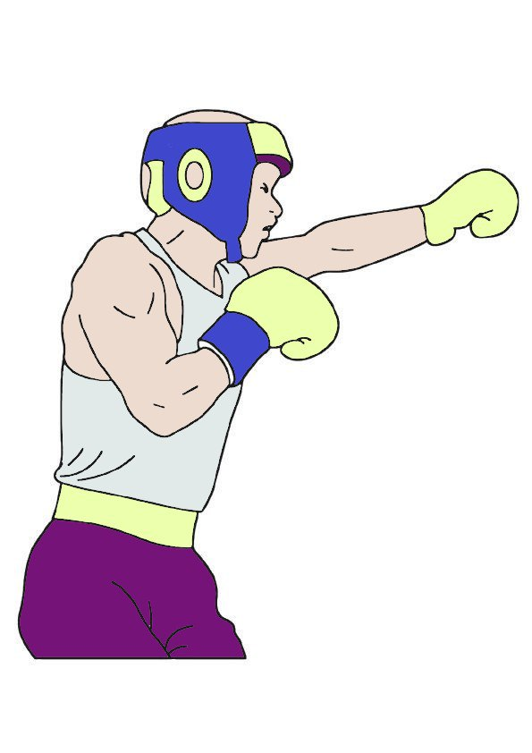
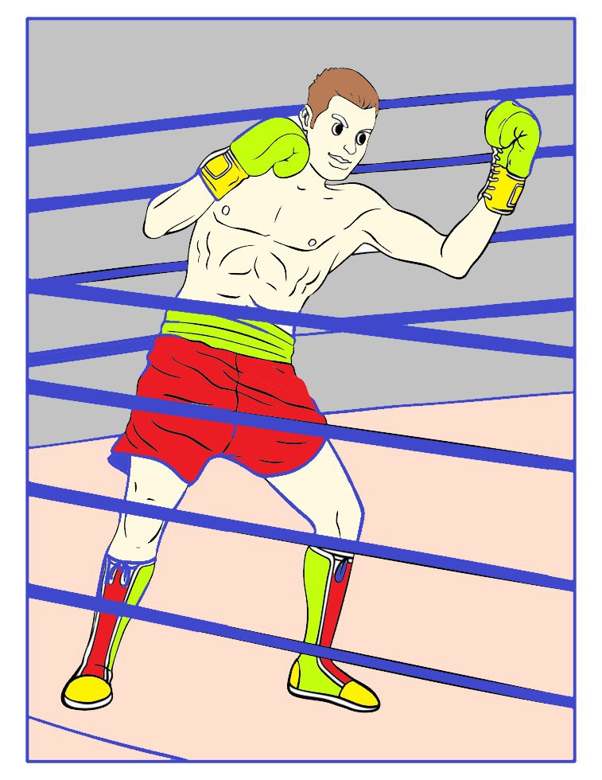
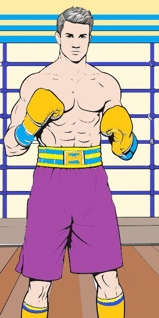
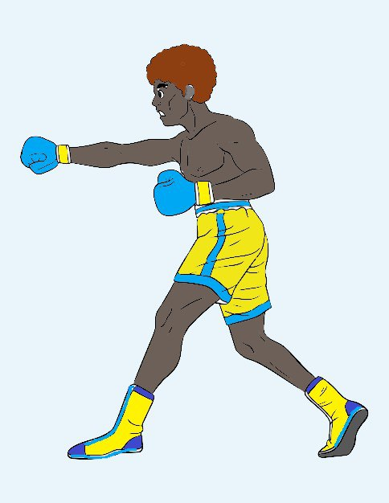

Олександр Усик
Статистика
- Повне ім'я: Олександр Олександрович Усик
- Прізвисько: Кіт
- Вагові категорії: Перша важка вага, Важка вага
- Зріст: 191 см
- Розмах рук: 198 см
- Рекорд: 21-0 (14 KO)
Досягнення
- Абсолютний чемпіон світу у першій важкій вазі
- Чемпіон світу у важкій вазі
- Перший українець - абсолютний чемпіон у двох вагах
- Золото Олімпійських ігор 2012
- Переможець Серії Супершоу
- Володар всіх 4-х головних титулів
Біографія
Олександр Усик народився 17 січня 1987 року в Сімферополі. Почав займатися боксом у 15 років. Олімпійський чемпіон 2012 року в Лондоні.
Став абсолютним чемпіоном у першій важкій вазі, об'єднавши всі чотири титули. У 2021 році перейшов у важку вагу та завоював титул чемпіона світу. Відомий своєю унікальною рухливістю та технікою для важковаговика.



